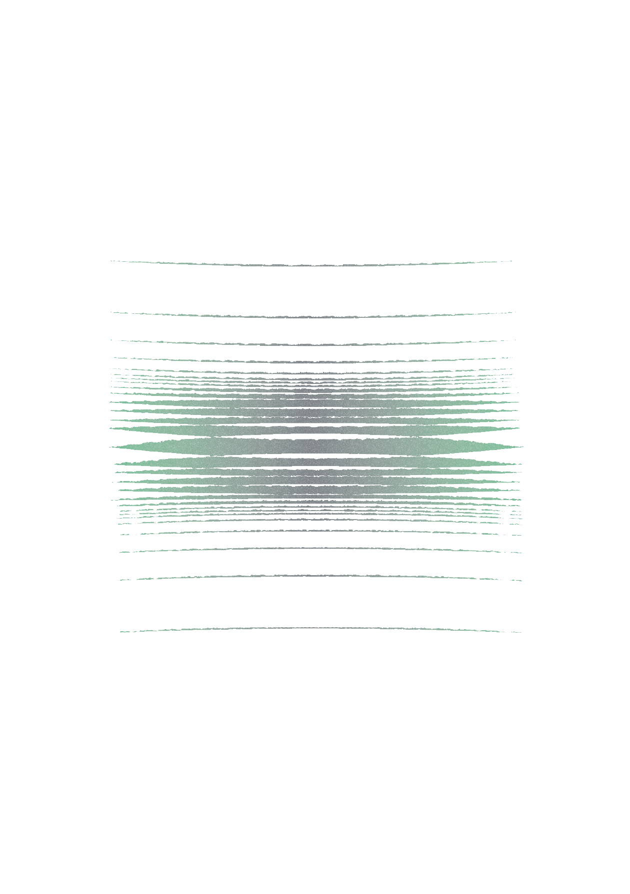
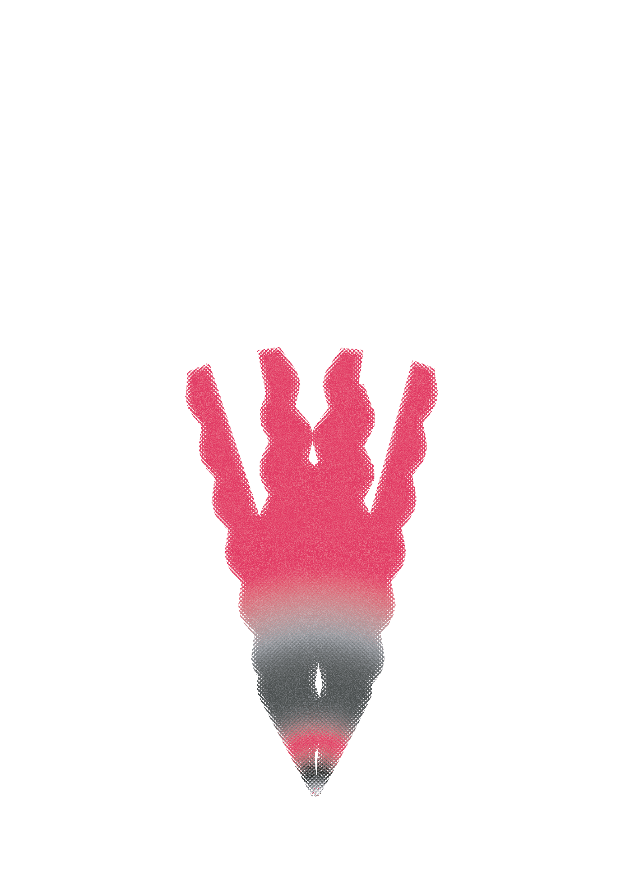
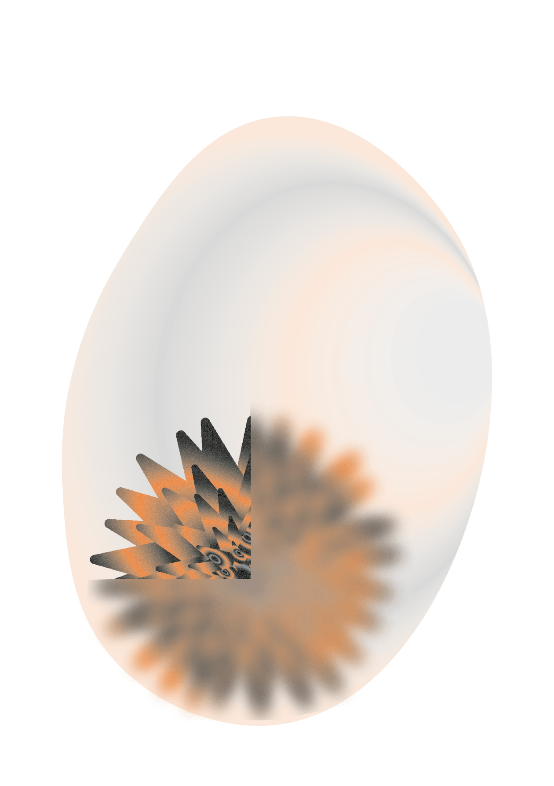
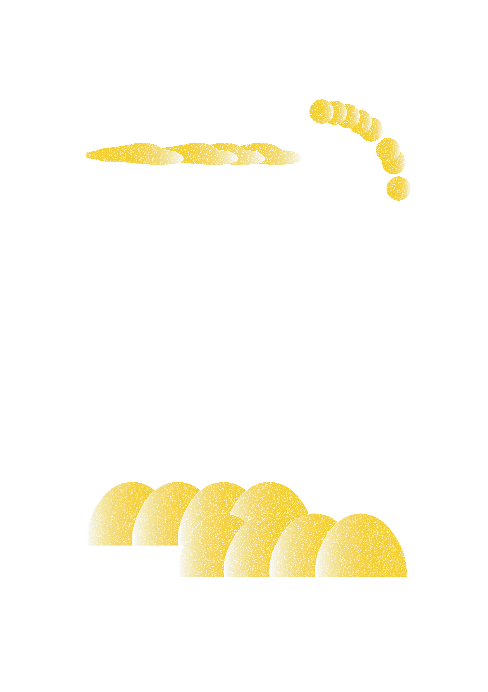
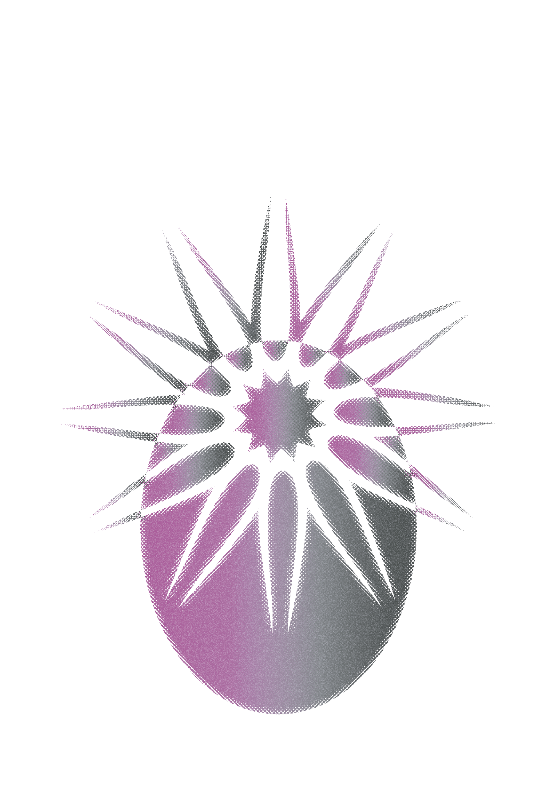
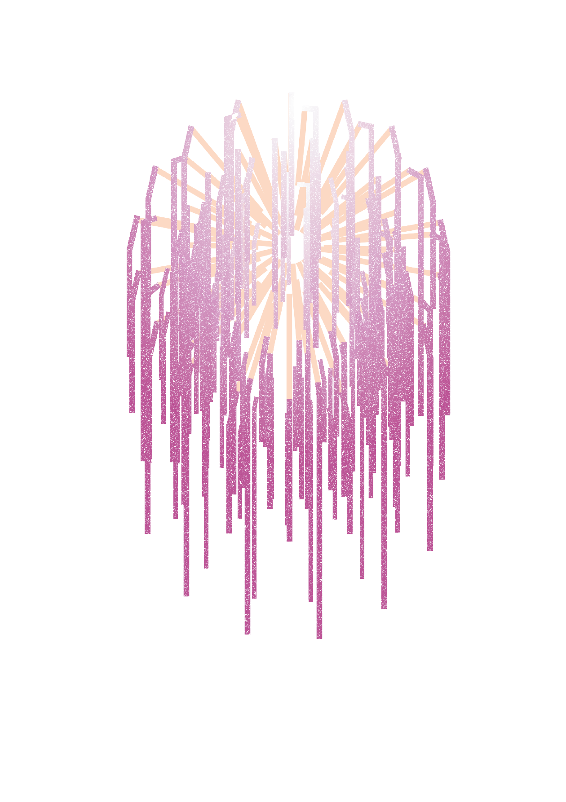
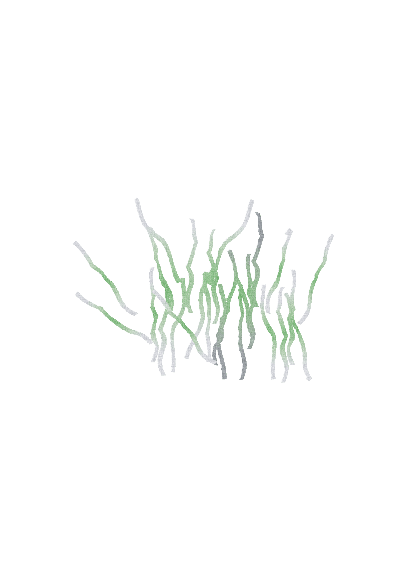

신입 사원들은 특히 긴장을 많이 한다. 왜 안 그렇겠는가. 근무 시간에는
언제 어떤 상황에서 고객이 나를 쳐다볼지 모르기 때문에 더 긴장된다.
CCTV가 100개쯤 달려 있는 곳에서 일하는 기분이다. 눈앞에 고객이 있든
없든 항상 바른 자세와 여유 있는 표정을 유지해야 한다. 신입 시절에는
힘들다. 어느 정도 세월이 흘러야 노련함이 몸에 밴다. 물론 가끔
서비스업이 천직이라 여겨질 정도로 태도나 표정, 목소리가 타고난
직원들도 본다. 그런 극소수의 직원을 제외하고는 나를 포함해 대부분
후천적인 노력이 필요하다.
권문현, 전설의 수문장, 2021

대부분의 승객이 종이를 무릎에 두고 눈을 감았다. 몇몇은 눈을 감는
대신 손으로 종이를 되돌려주었다. 도와달라고 했으니 도울까, 아무도
돕지 않으니 나라도 도울까 하다가 어떤 상황이 생길지 염려되어,
죄송하지만 그분이 좀 무섭기도 해서, 용기를 내지 못하고 포기했다.
그렇게 다른 사람들처럼 눈을 감으려다가 그러기엔 왠지 또 예의가 없는
것 같아서 타이밍을 기다렸다가 직접 종이를 건넸다. 나눠준 종이를 다
수거하고 스르륵 소득 없는 소쿠리를 밀면서 검정색 고무판은
멀어져갔다.
전혜성, 날마다 지하철, 2021
“밀지 마세요. 위험하다니까요.” 신경질적인 반응과 함께 짜증 섞인
목소리가 터져 나오는 서울 지하철 9호선은 2호선과 함께 대표적인
‘지옥철’로 불린다. 도저히 사람을 더 실을 수 있을 것 같지 않을 정도로
꽉 차 있지만, 출근 시간에 늦지 않으려는 직장인들은 꾸역꾸역 지하철에
몸을 싣는다. 출근 시간대 환승역에 정차하면 내리려는 승객과 타려는
승객이 뒤엉키면서 극심한 혼란이 빚어지기도 한다. 직장인
최정호(35)씨는 “내리려는 승객들에 휩쓸려 내려야 할 역이 아닌 곳에서
내렸다가 다시 타지 못한 적도 있다”며 “회사에 도착하기도 전에
지하철에서 진이 다 빠진다”고 전했다.
홍인기, 곽소영, [취중생] 일상이 된 지옥의 출근길…퇴근 때라도
‘지옥철’ 피하려 귀가 늦추는 직장인들, 서울신문, 2023

변화를 믿는 사람이 적을수록 변화는 잘 일어나지 않는다… 타인의 용기에
찬물을 끼얹은 사람은 자신의 행동(즉, 행동하지 않는 행동)이 미치는
영향에 대한 책임 또한 져야 한다.
스티브 크로셔, 거리 민주주의, 169p, 2017
속도감을 즐기게 된 아이는 친구들 없이도 신나게 자전거를 타며 땀을
흘렸다. 일을 못하리라는 것을알면서도 나는 에코백 안에 책과 작은
노트를 악착같이 챙겨 다녔다. 아이를 위한 물건들 사이에서 책의
모서리는 둥글게 휘어졌고 노트의 표면에는 잔기스가 잔뜩 생겼다.
암담함 속에서 세상은 풍문과 잡음으로 시끄러웠고 이런 날들이 언제까지
계속될지 나아지긴 할 건지 예측할 수 없었다. 공원의 벤치에 앉아
하늘과 나무들을 바라보고 있으면 시간이 멈춘 것 같았다. 어떤 시기에도
아이는 자란다는 것과 어떤 일도 결국에는 지나가리라는 사실만이 희미한
위안이 되었다.
홍한별, 정서경, 서유미, 돌봄과 작업, 80p, 2022

주중동에서 매일 출·퇴근한다는 김모씨(64)는 보기 드문 할머니였다.
새벽 5시에 40분을 걸어 이곳에 도착한다는 김씨. 저 몸으로 어떻게 일을
하나 심을 정도로 그는 왜소했다. “86살의 시아버지가 중풍으로 누워
있지. 거기다 남편(66)은 우울증으로 바깥출입을 하지도 못해. 그나마
내가 멀쩡해서 다행이지. 큰놈은 뇌종양으로 누워 있지, 며느리는 애들
둘 데리고 아등바등 허지. 여기는 힘쓰는 일이 많은데 나이도 많고
기력도 없으니 잘 써주지도 않고. 일거리가 없어서 그렇지 일거리만
있으면 닥치는 데로 허지.” 일자리가 부쩍 줄었다며 이어지는 김씨의
푸념. “다덜 살기 힘들다고 하는디 우리 같은 사람은 아예 죽으라는
얘기지. 그래도 작년은 괜찮었는디.”
김명주, "하루 벌어 먹고 사는 것도 힘드니…", 충청리뷰, 2003

용서는 받을 때보다 남을 용서할 때 더 큰 평화가 찾아오는 역설적
속성이 있습니다. 종교적 의무로써 강요된 용서는 스트레스를 받으면
활성화되는 교감신경이 향진되어 혈압이 오르지만, 공감과 사랑에 의해
중재된 용서는 그러지 않았다는 연구 결과가 있습니다. 원한을 품고
상처를 생각하면 혈압이 오르지만, 가해자의 상황에 공감하고 용서를
상상할 때는 그러지 않았습니다. 용서는 안정감을 주는 부교감신경계를
활성화해 혈압을 낮추고 심장병 위험을 감소시킵니다.
최명환, 용서의 심리학, 용서는 왜 필요할까?, 정신의학신문, 2018

<가정(家庭)> 박목월 지상(地上)에는 아홉 켤레의 신발. 아니
현관에는, 아니 들깐에는 아니 어느 시인의 가정에는 알전등이 켜질
무렵을 문수(文數)가 다른 아홉 켤레의 신발을. 내 신발은 십구 문
반(十九文半). 눈과 얼음의 길을 걸어, 그들 옆에 벗으면 육 문
삼(六文三)의 코가 납짝한 귀염둥아 귀염둥아 우리 막내둥아.
그러나 지금의 가축 인간들은 저팔계만큼의 사랑스러움에도 크게 못
미친다. 가장 중요한 점 한 가지는 저팔계에게 그런 농민 같은 교활한
면이 있기는 하지만 총체적으로 본다면 그래도 성실한 편이라는 것이다.
거짓말을 한 뒤에는 조금이나마 미안한 감정을 느낄 줄 안다. 그러나
지금의 가축인간들은 이해타산만 가득할 뿐 성실하지도 않은 데다 성인을
자임하거나 혁명전사로 자처하는 자가 많다. 이 점이 내 마음속에 있던
가축인간의 형상을 크게 바꿔놓았다. 현대의 수많은 가축인간도 먹기
좋아하고 색을 밝히기는 마찬가지다. 음식과 성의 욕망이 지나치지만
않다면 아주 가혹한 요구를 할 필요는 없다. 그러나 그들은 항상
자신들이 표준인 양 가장하고 자신들이 혁명의 성스러운 무리인 듯
가식을 떨기 때문에 사람들에게 혐오감을 준다. 저팔계는 자신이 음식과
여색을 밝히는 것을 조금도 숨기지 않고, 이런 약점이 폭로되어
웃음거리가 되어도 화내지 않는다. 그러나 현대의 가촉인간들은 항상
자신의 본성을 감출 뿐 아니라 거창한 도리를 입에 달고 살면서 자신들의
추악한 행동을 혁명에 필요한 것이라 둘러대니 정말 견디기 어렵다.
류짜이푸, 인간농장, 34p, 2014

부산의 B 대학교에 재학 중인 전인혜(22, 부산 해운대구) 씨는 오전 9시에 진행되는 아침 수업을 수업 중 졸거나 자는 이유로 꼽았다. 그녀는 “9시 수업에 출석하려면 새벽 6시에 일어나서 등교 준비를 해야 한다. 이것저것 하다가 밤 12시 이후에 자면 몇 시간 못자고 학교에 간 셈이니 수업 중 잠이 올 수밖에 없다”며 이른 기상시간과 부족한 수면 시간을 그 이유로 지적했다.
최유진, 대학 강의실은 ‘잠과의 전쟁 중’...밤에 게임, 알바, 유튜브
하다 낮에 학교에서 '쿨쿨', 시빅뉴스, 2019

어서, 차라리 어두워버리기나 했으면 좋겠는데─벽촌의 여름날은 지리해서
죽겠을 만치 길다. 동에 팔봉산. 곡선은 왜 저리도 굴곡이 없이
단조로운고? 서를 보아도 벌판, 남을 보아도 벌판, 북을 보아도 벌판,
아─이 벌판은 어쩌라고 이렇게 한이 없이 늘어 놓였을꼬? 어쩌자고
저렇게까지 똑같이 초록색 하나로 돼먹었노? 농가가 가운데 길 하나를
두고 좌우로 한 십여 호씩 있다. 휘청거린 소나무 기둥, 흙을 주물러
바른 벽, 강낭대로 둘러싼 울타리, 울타리를 덮은 호박넝쿨, 모두가 그게
그것같이 똑같다.
이상, 권태, 1936

충격 경악 결국 멘붕 발칵 입이 쩍 헉! 폭소 무슨일 이럴수가 알고보니
화들짝 이것 살아있네 몸매 미모 숨막히는 물오른 얼짱녀 신경쓰여
최근한온라인커뮤니티★ 화제다★ 네티즌들은★ 누구?★ 하네요

연구자들이 밝혀낸 결과는 다음과 같았다. 특히 고독감을 느끼는
사람들은 관계에 만족하는 사람들보다 위협을 느끼는 사회적 상황에 훨씬
더 주목했다. 고독감을 느끼는 실험 대상자들의 눈동자는 무의식적으로
기피와 무시를 보여주는 이미지로 쏠렸다. 기능적 자기공명영상장치를
이용한 연구를 포함해 다른 연구들에서도 비슷한 그림이 나왔다. 즉,
고독감은 우리가 사회적 위협에 집착하게 만든다. 이 남자가 날 비웃는
걸까? 저 여자가 나한테 쌀쌀맞게 구는 건가?
마르타자라스카, 건강하게 나이든다는 것, 2020

팬들의 덕질의 원동력은 저마다 달랐지만, 덕질을 통해 활기를
얻는다고 느낀 것은 같았다. 한시윤 씨는 “즐길 거리 없는 삶 속에서
좋아하는 아이돌이 있다는 건 현실을 버티게 해주는 버팀목”이라며
“덕질은 돈을 열심히 버는 이유 중 하나”라고 말했다. 윤나리 씨 역시
“앨범 발매나 자컨 공개를 기다리면서 팍팍한 현실을 버틸 수 있게
된다”며 “애정을 쏟을 대상이 있다는 것 자체가 인생에 큰 변화를
일으킨다고 느낀다”고 전했다. 나아가 김다운 씨는 “좋아하는 영상을
보거나 지나가다 우연히 좋아하는 아이돌의 노래가 들릴 때마다 갑자기
폭죽이 터지는 것처럼 즐겁다”며 “덕질을 통해 매일매일이 축제가
된다”고 표현하기도 했다.
김하은, 누군가의 팬으로 산다는 것, 서울대저널, 2022

퇴사 인사 구성 퇴사 인사말 구성 예시 1. 퇴직 보고 담당 직무를
언급하고 퇴사 사실을 발표한다. “오늘을 마지막으로 (직무) 자리에서
(업무)를 마무리하게 되었습니다." 2. 퇴사사유 및 추억 언급 그 자리에
있는 상사나 동료와의 에피소드와 인상 깊은 추억을 공유한다. "XX님과
●● 프로젝트를 완수하여 사내 표창을 받았던 추억은 잊지 못할 것
같습니다. 3. 감사 인사 감사 인사를 포함한다. "오랜 시간 많은
도움과 격려를 주셔서 감사했습니다." 4. 미래 관계 형성 긍정적인 미래
관계에 대한 기원을 언급한다. "향후에도 좋은 인연으로 다시 만나
뵙기를 기원합니다." 5. 맺음말 기업과 동료들에 대한 건강 또는 성공
기원 등으로 마무리한다. "앞으로 좋은 일들이 가득하시길 바랍니다."
커리어조언, 퇴사가이드- 마음을 전하는 퇴사 인사말 남기기,